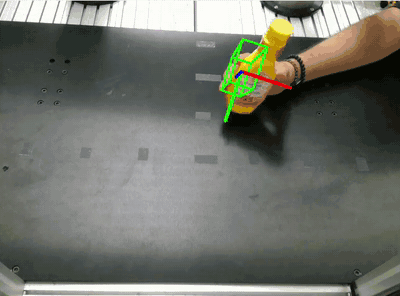
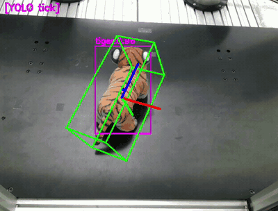
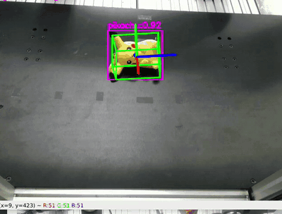
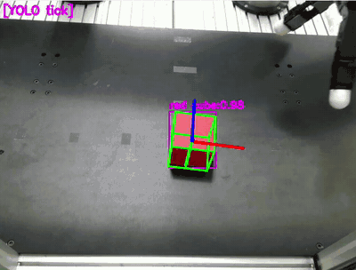
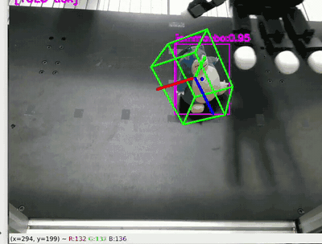
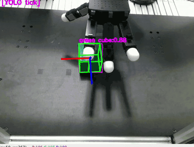
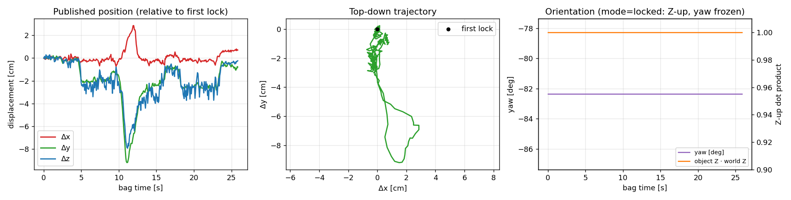

Track any object in 6D from just its 3D mesh and its name. YOLO-World finds it from a
text prompt, SAM 2 segments it, and FoundationPose registers and tracks its pose. The node publishes a
gravity-aligned PoseStamped that a robot can grasp from, with no per-object training.
Recorded RealSense RGB-D bag, tracked with the prompt "green cube" and green_cube.obj.
The cube is lifted by hand and put back while three distractor objects stay on the table. Thick axes show the published Z-up pose.
track_one() every frame on hole-filled depth, plus periodic re-anchoring and automatic re-acquisition.Live tracking with the top-down RealSense of a dual UR3 + Allegro Hand cell. The tracked pose drives a dexterous grasp planner.







git clone https://github.com/ismael-esp/foundationpose-ros2-tracker.git
cd foundationpose-ros2-tracker
bash scripts/install.sh # conda env + FoundationPose + CUDA extensions + weights
bash scripts/replay_demo.sh "green cube" # offline demo on the recorded bag, no camera neededTested on Ubuntu 22.04, ROS 2 Humble, an RTX 5070 Ti (Blackwell) with PyTorch 2.11 + CUDA 12.8, and RealSense D4xx. The README covers installation, configuration, adding your own objects, and troubleshooting.